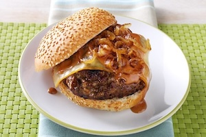

Bacon cheeseburgers are juicy and packed with flavor from the melted cheese and crispy bacon. The salty crunch of bacon perfectly balances the rich, savory beef patty. Melted cheese adds a creamy layer that ties everything together. Every bite combines smoky, savory, and satisfying textures.
BBQ cheeseburgers are loaded with smoky, tangy sauce that boosts every bite. The sweet and savory BBQ flavor pairs perfectly with melty cheese and grilled beef. Caramelized onions or pickles often add a delicious kick. Each bite is juicy, bold, and full of backyard cookout vibes.
| Burger | State | Rating |
|---|---|---|
| Cheese | Virginia | 9/10 |
| BBQ | Texas | 10/10 |
| Bacon | Maine | 9.3/10 |